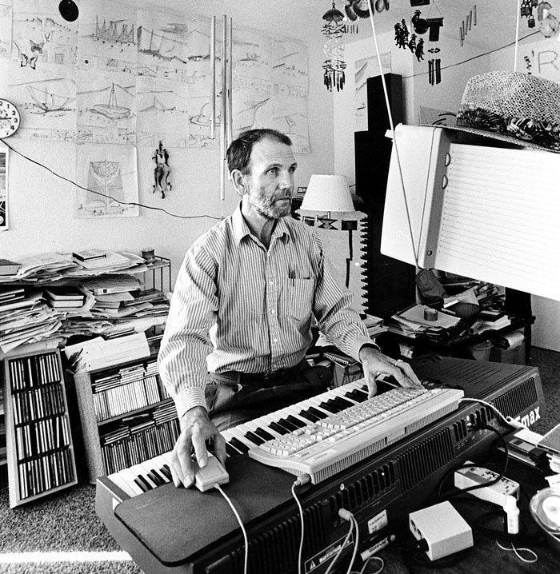
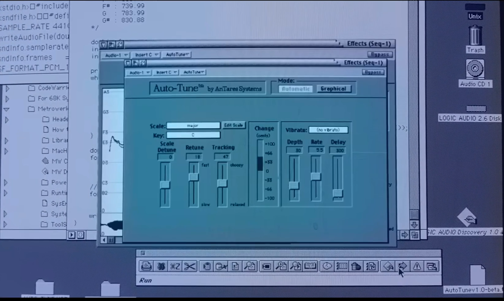

introduction to the coArse
"[the AnAlyticAl engine] Might Act upon other things besides nuMber, were objects found whose MutuAl fundAMentAl relAtions could be expressed by those of the AbstrAct science of operAtions, And which should be Also susceptible of AdAptAtions to the Action of the operAting notAtion And MechAnisM of the engine . . . supposing, for instAnce, thAt the fundAMentAl relAtions of pitched sounds in the science of hArMony And of MusicAl coMposition were susceptible of such expression And AdAptAtions, the engine Might coMpose elAborAte And scientific pieces of Music of Any degree of coMplexity or extent."— AdA lovelAce (sketch of the AnAlyticAl engine) 1842
i will be using netnet for All My deMos And exAMples, but you Are welcoMe to use whichever code editor you prefer (pending My ApprovAl).
if you're new to jAvAscript tAke soMe tiMe this week to fAMiliArize yourself with the bAsics. i hAve notes froM one of My other clAsses you cAn tAke A look At. for A More thorough review these core progrAMMing concepts As they AppeAr in the jAvAscript lAnguAge, consider reAding the first few chApters froM MArijn hAverbeke's book eloquent jAvAscript (3rd edition 2018).
deliA derbyshire eArly pioneer in sAmpling And electronic music. you cAn wAtch A longer documentAry About her And her work here.
dAvid cope working on his experiMents in MusicAl intelligence.
A screenshot of the originAl Auto-tune App froM the netflix documentAry this is pop: Auto-tune.
holly herndon presents her Ai project holly+ At ted
class examples
- noise (wArning: this is loud!)
- button + noise
- button + sine wave
- c MAjor scAle rAndoMizer
- c MAjor scAle (with oscillAtors)
- MAjor scAle (oscillAtor + Adsr)
- MAjor scAle (with tone.js)